Boxed Lists#
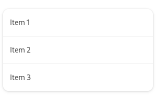 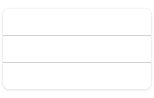Boxed lists are a common type of list that can contain both controls and information. Examples include app preferences or a short list of recent documents in a picker.
The boxed list pattern is appropriate for relatively small static lists. For large or dynamic lists, see list views.
Guidelines#
Organize lists semantically, using the same guidelines as menus. Multiple lists can be included in the same view, to act as different sections. If necessary, each list can be given a heading.
Boxed list rows can include purely informational content or controls. They can also act as a link to another view (rows which do this should have a go-next-symbolic arrow placed at the end).
Rows that include controls should generally just have one, and should have a maximum of two. When there is a control, clicking the list background should trigger the control. The controls should be focusable, but the list row should not be, allowing direct switching of keyboard focus between the controls and prior/subsequent rows.
Lists have a number of style and layout considerations:
If a list row includes multiple text elements, differentiate them using text size, weight and color.
If icons are included in a list row, they should typically have the symbolic style. The lower visual footprint of these icons will mean that they do not visually overload or dominate your list.
Lists should have a minimum and maximum width, in order to support adaptive scaling.
Predefined List Rows#
For convenience, GNOME provides a number of predefined list rows. These can also be used as the basis of custom row designs of your own.
Switch rows include a title, subtitle, and a switch:
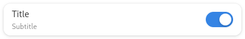 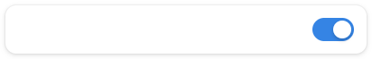Action rows include a title, subtitle, and a control:
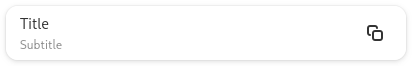Combo rows include a drop down list, from which a single option can be selected:
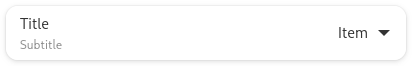Entry rows allow text entry and editing:
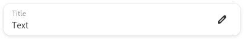Spin rows include a number which can be edited or adjusted using plus and minus buttons:
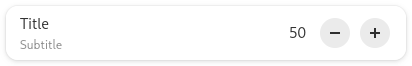Property rows include a property name and a value:
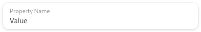Expander rows expand to reveal additional rows below:
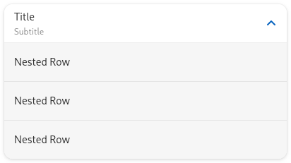 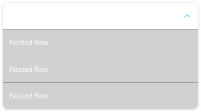Editable Lists#
Design conventions exist for editable boxed lists, which allow users to add, remove and reorder rows.
Rows can be added using an add button that is shown at the top of the list, or with an add button row, which is placed at the end of the list.
Place a remove button at the end of each row.
- If changing list order is required:
Include drag handles at the beginning of the rows, to allow moving them.
Instead of showing a remove button at the end of each row, include a button menu, with items for “move up”, “move down,” and “remove” (menu items for move actions are required for accessibility purposes).